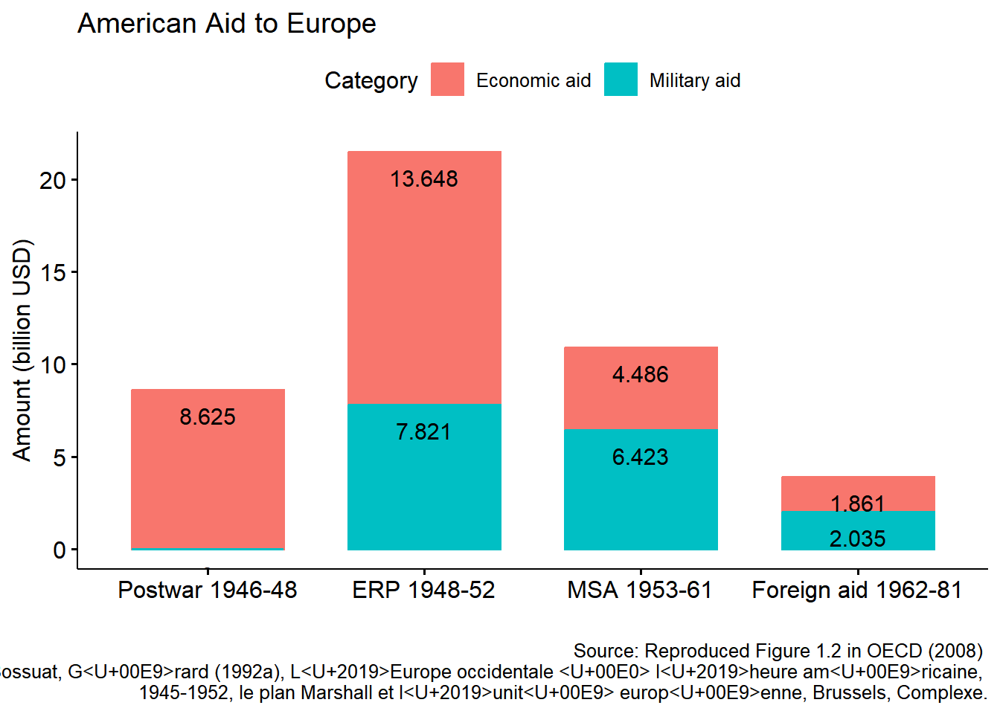
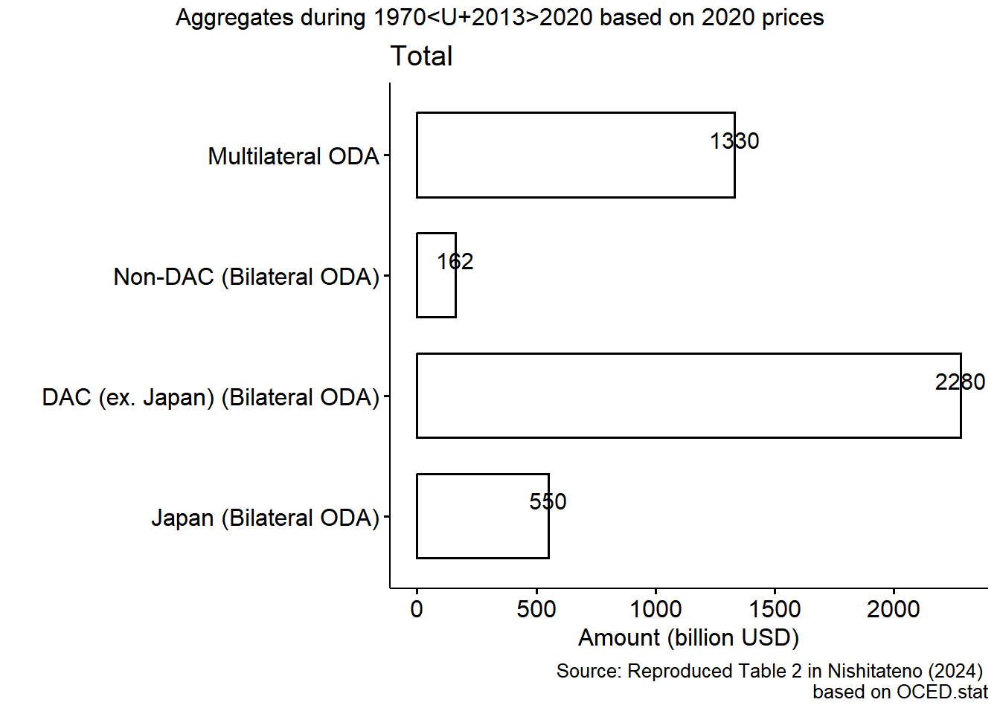
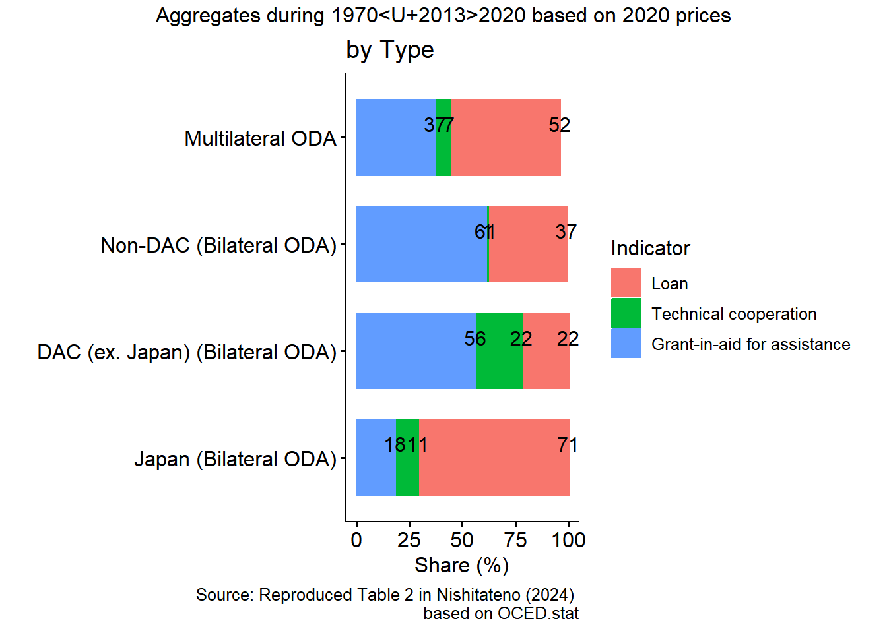
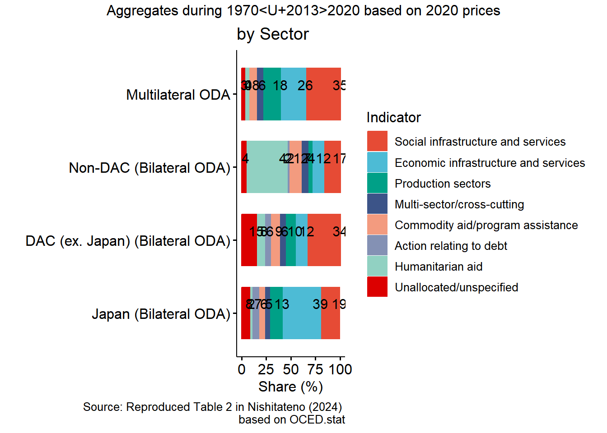

Official Development Assistance
Objectives
- Trace the history and evolution of Japan’s Official Development Assistance (ODA) strategy
- Examine how Japan uses ODA as both a diplomatic and economic tool
- Assess debates over ODA’s effectiveness
Key Concepts
- Official Development Assistance (ODA)
- Infrastructure financing
- Economic growth and development
Roadmap
- History: from Marshall Plan and OECD-DAC to Japan as recipient and donor
- Strategy: Japan’s approach vs. the DAC model, commitments, recent trend
- Tool: ODA as infrastructure financing, diplomacy and economic policy
- Debate: does aid work?
Overview
US Marshall Plan
- European Recovery Program: ERP
- 16 European countries: 13.6 billion USD (88 billion in 1997 USD)
- By 1950, the participating countries had returned to, or exceeded, their prewar production levels
- US exerts their influence in Europe, including market access
- Organisation for European Economic Co-operation in 1948

- (https://www.imf.org/external/np/exr/center/mm/eng/mm_dr_03.htm)
- Develop multilateral payment and trade within Europe
- Move toward currency convertibility
- Move toward eliminating discrimination against U.S. imports
- Encourage reductions in public spending
- Relax government controls such as rationing
- Increase exports to the United States
OECD-DAC
- OEEC and DAG: decolonization during 50s
- Organisation for Economic Co-operation in 1960 for wider scope
- OECD-DAC (1961) sets standards and collects statistics on ODA, including ODA definition:
- provided by official agencies or their executive agencies
- to promote the economic development and welfare of developing countries
- concessional in character (more favorable terms than the market rate, minimum “grant element”)
- 33 members as of 2025
Japan as aid recipients
- 1946 ~ 1951, Japan received a total of USD5 billion in US aid (financed 40% Japanese imports)
- Part of the repayment for the US was used to finance US-Japan cultural exchange (including the Fullbright program)
- 1953 ~ 1966, the World Bank provided USD860 million for 34 development projects in the country: Tanagawa Dam, Tokaido Bullet Train (from Tokyo to Osaka), the Tōmei Highway (from Tokyo to Nagoya), and the Kurobe hydroelectric dam
- During 1960s, Japan was the second largest recipient of aid from the World Bank, payment fulfilled in 1990
Japan as aid donors
Japan joined DAG in 1960, became founding member of OECD-DAC in 1961
Japan joined Colombo Plan in 1954,
- Started paying reparations to other Asian countries until 1976 (central aspects of Japan’s economic foreign policy toward Asian countries until mid 1960s)
- Began providing technical experts, training, and equipment to Asian countries
Since 1970s:
- Gradually aligned with DAC norms (grant element, untying, evaluation)
- Adopted global themes (environment, gender, participation)
Japan ODA charter (1992) list philosophies of Japan’s ODA
- humanitarian considerations
- recognition of interdependence among nations of the international community
- environmental consideration
- support for self-help efforts of recipient countries
- The plan was established in 1950 by Commonwealth nations to promote technical cooperation among the member countries of the British Commonwealth of Nations, with the focus on economic development in South and Southeast Asia.
Japan’s Approach vs. DAC Model
| Aspect | Japan’s ODA Approach | Typical DAC / Western Approach |
|---|---|---|
| Development Philosophy | “Ingredients approach” – emphasizes tangible inputs (infrastructure, technology, industry) | “Framework approach” – focuses on institutions, policy reform, governance |
| Economic Role of the State | Active state-led industrialization and strategic planning | Market-driven liberalization, minimal state intervention |
| Aid Objectives | Promote productive capacity, trade, and growth in Asia | Prioritize poverty reduction, welfare, and governance reforms |
| Aid Modality | Loans and technical cooperation, often tied to Japanese firms | Predominantly grants, focused on social sectors |
| Underlying Logic | Development as self-help and partnership — supporting recipient ownership through economic buildup | Development as policy reform and conditionality — supporting institutional change |
Japan’s ODA commitments: Total

Japan’s ODA commitments: by Type

Japan’s ODA commitments: by Sector

Japan’s recent ODA trend: 2023 Charter
New Development Cooperation Charter
- Promotes equal partnerships with developing countries to tackle shared global challenges.
- Aims to build a peaceful, stable, and prosperous international community under a free and open order based on the rule of law.
- Seeks to foster trust and a favorable international environment for Japan and the world.
- Supports Japan’s national interests—peace, security, and prosperity through economic growth.
Japan’s recent ODA trend: ASEAN
- a move from aid objective to cooperation development
- Strengthen hard and soft infrastructure support (particularly in the Mekong region) to ‘enhance connectivity’,
- Develop human resource to promote productivity growth and technological innovation to avoid the ‘middle-income country trap’,
- Enhance disaster management and disaster response capacity building,
- Promote of the rule of law.
- Declining trend: interest rate from 1% to 1.7% with exception for environment (1.5%) and consulting services for design and construction supervision (0.01%)
ODA as infrastructure financing
- Japan’s ODA historically supported infrastructure and industrial development in Asia
- Loans and technical cooperation, often tied to Japanese firms (“ingredients approach”)
- Japan itself was financed this way: World Bank loans built the Tokaido Bullet Train, the Tōmei Highway and the Kurobe dam
- Infrastructure aid is the type most consistently linked to growth (Easterly, 2003)
ODA as a diplomatic and economic tool
- Economic benefits:
- Increases in the case of Japan: Nishitateno (2024)
- Increases in the case of infrastructure: Ono (2025)
- Diplomatic benefits (soft power):
- “the ability to get what you want through attraction rather than coercion or payments”
- harmonization of regulatory, standards, etc
- Reparations and Colombo Plan ties in Asia; 2023 Charter links ODA to national interests
Debates on ODA effectiveness
- In theory, ODA effect can be
- Positive: use ODA to invest and grow
- Non-positive: use ODA to consume luxury goods
- Empirical studies:
- Aid has no effect on growth (early 1970 studies)
- Aid has a positive relationship with growth on average with diminishing returns (1990s studies)
- Aid has a conditional relationship with growth:
- Good policies (Burnside and Dollar, 2000)
- Climate, institutional quality, political conflict, and geography (Hansen and Tarp, 2001)
- Each type of aid has different impact on growth:
- Humanitarian aid: no direct impact
- Infrastructure aid: positive impact (Easterly, 2003)
Japan’s ODA and growth
- Japan’s ODA historically supported infrastructure and industrial development in Asia.
- Institution quality is important for ripping the benefits of ODA (Burnside and Dollar, 2000)
- Japanese ODA has positive effects on ASEAN economic growth (Nguyen et. al, 2022)
Looking ahead: ODA and private capital
- Aid is one channel of development finance; FDI is another
- Next lecture: can ODA catalyze FDI?
References
- Burnside, C. & Dollar, D. 2000, ‘Aid, policies, and growth’, American economic review, 90 (4).
- Easterly, W., 2003, “Can Foreign Aid Buy Growth?”, Journal of Economic Perspective, 17 (3).
- Furuoka, F., Oishi, M., & Kato, I. (2010, July 12). From Aid Recipient to Aid Donor: Tracing the Historical Transformation of Japan’s Foreign Aid Policy [Text]. Electronic journal of contemporary Japanese studies.
- Hansen, H. & Tarp, F., 2000, “Aid and Growth Regressions”, Centre for Research in Economic Development and International Trade, University of Nottingham Research Paper No.00/07.
- Iwata, T. 2013. Japan’s Soft Power in Africa. Ritsumeikan Annual Review of International Studies. ISSN 1347-8214. Vol.12, pp. 103-114
- Nishitateno, S., 2024. “Does official development assistance benefit the donor economy? New evidence from Japanese overseas infrastructure projects,” International Tax and Public Finance, Springer;International Institute of Public Finance, vol. 31(4), pages 1037-1065.
- Nguyen, H. P., Huynh, A. N. Q., Reisach, U., & Kim, X. L. T. 2022. How does Japanese ODA really contribute to economic growth for ASEAN countries? Journal of International Economics and Management, 22(2).
- MOFA, 2023, White Paper on Development Cooperation 2023
- OECD, 2008, The Marshall Plan: Lessons Learned for the 21st Century, OECD Publishing, Paris.
- Takagi, S., 1995). From recipient to donor: Japan’s official aid flows, 1945 to 1990 and beyond. Internat. Finance Sect., Dep. of Economics, Princeton Univ.
- Yanagihara, Toru, 2017, International Trends in Development Aid and Japan’s ODA: 日本国際問題研究所, 1–11.
- Data link
- https://data.worldbank.org/indicator/NY.GDP.MKTP.CD
- https://data.worldbank.org/indicator/DT.ODA.ALLD.CD